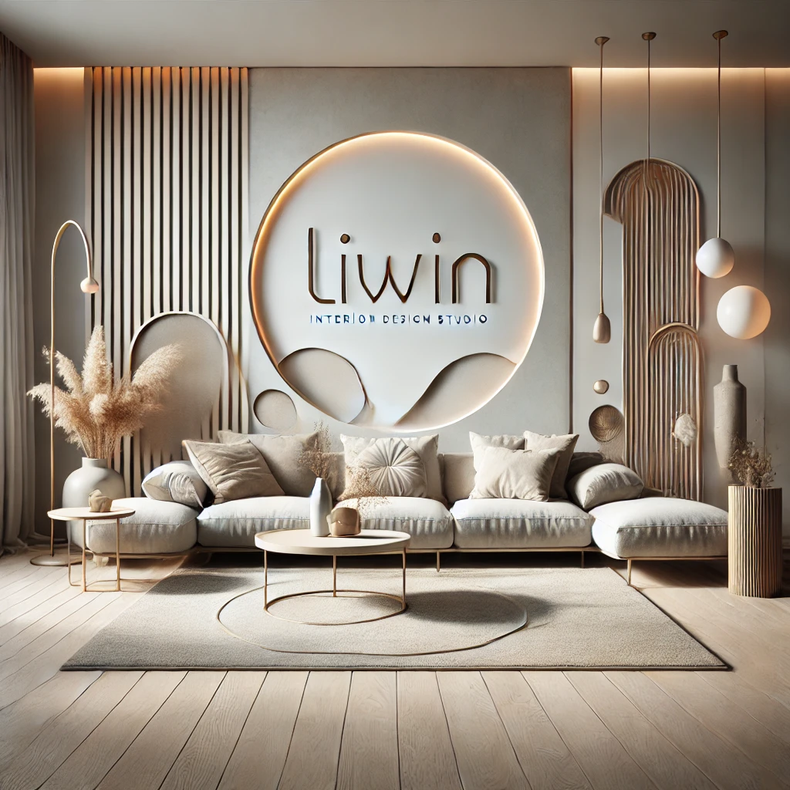
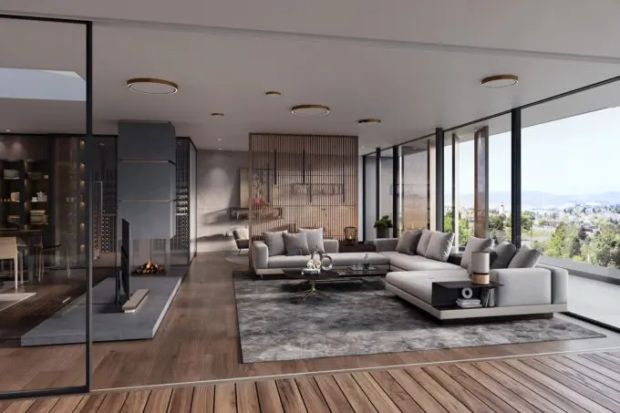
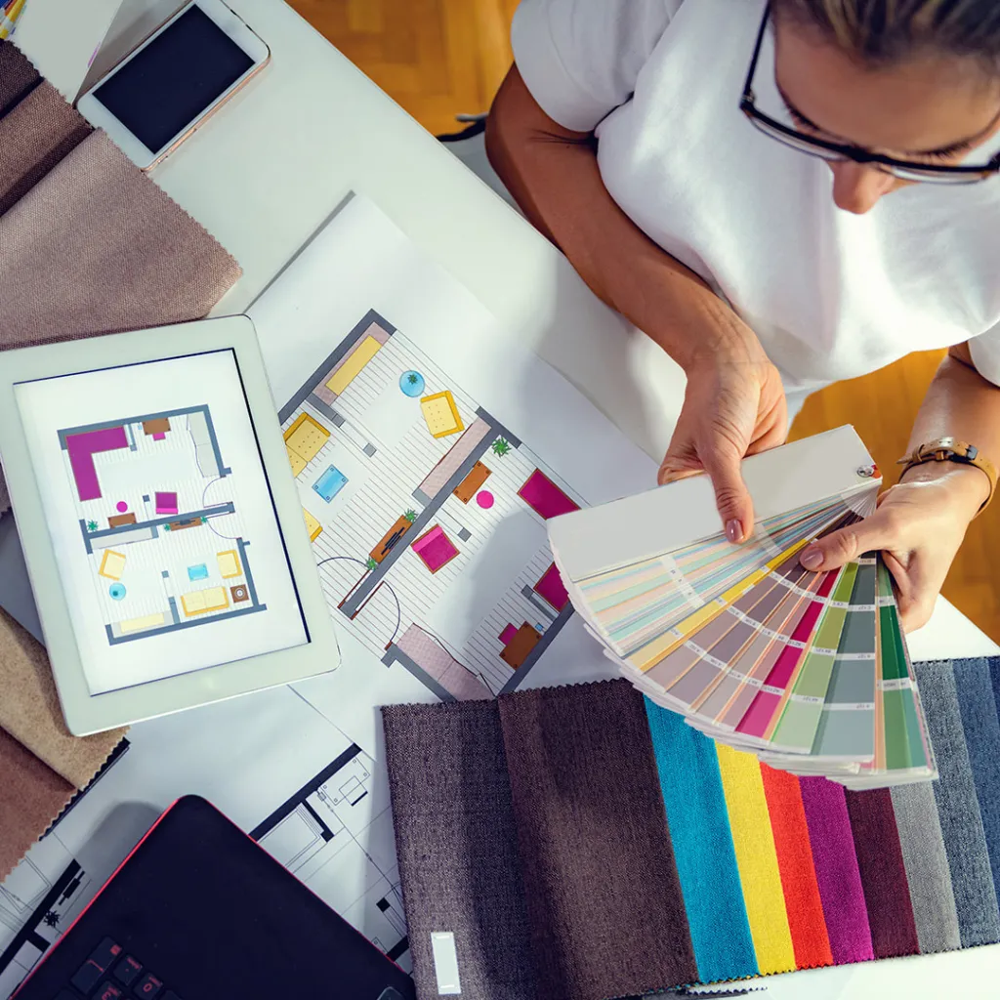
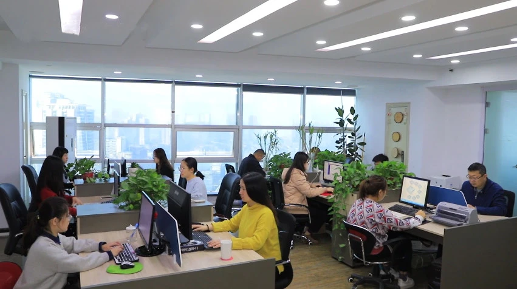
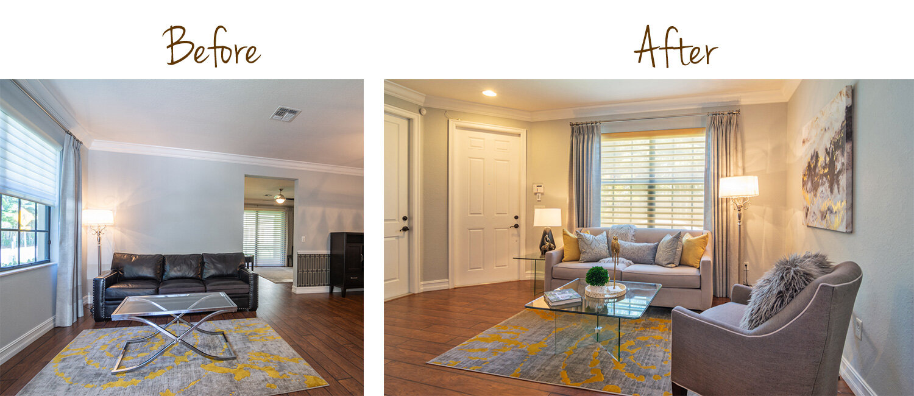

Наша історія
Компанія "Liwin" була заснована у 2022 році з місією створювати інтер’и які поєднують функціональність, естетику та індивідуальність. Від моменту свого заснування "Liwin" стала символом сучасного підходу до дизайну, пропонуючи унікальні рішення для житлових і комерційних приміщень.
Наша філософія
"Liwin" орієнтується на клієнта та його потреби. Ми віримо, що кожен простір має відображати характер його власника, а також бути максимально зручним і гармонійним. Кожен проект створюється з урахуванням сучасних тенденцій, екологічності матеріалів і практичності.
Чому обирають нас
1.Індивідуальний підхід: кожен проект унікальний, як і наші клієнти.
2.Творчість і інновації: ми завжди шукаємо нові ідеї, щоб ваш простір був неповторним.
3.Якість та професіоналізм: команда "Liwin" складається з талановитих дизайнерів, архітекторів та декораторів, які досконало володіють своєю справою.
4.Своєчасна реалізація: ми цінуємо час наших клієнтів і працюємо над чітким дотриманням термінів.
Наші досягнення
З 2022 року компанія "Liwin" успішно реалізувала понад 100 проектів у різних стилях — від мінімалізму до класики. Ми пишаємося тим, що наші роботи отримують позитивні відгуки та стають натхненням для інших. Довіряючи "Liwin", ви отримуєте більше, ніж просто дизайн інтер’єру. Ви отримуєте простір, який дарує комфорт, красу та натхнення щодня.
Наші послуги
Розробка дизайну інтер'єру: створення концепції, ескізів та 3D-візуалізацій.
Підбір матеріалів та меблів: рекомендації щодо найкращих рішень для вашого простору.
Авторський нагляд: контроль за реалізацією проекту для досягнення найкращого результату.
Редизайн: оновлення інтер’єрів із збереженням існуючих елементів.
